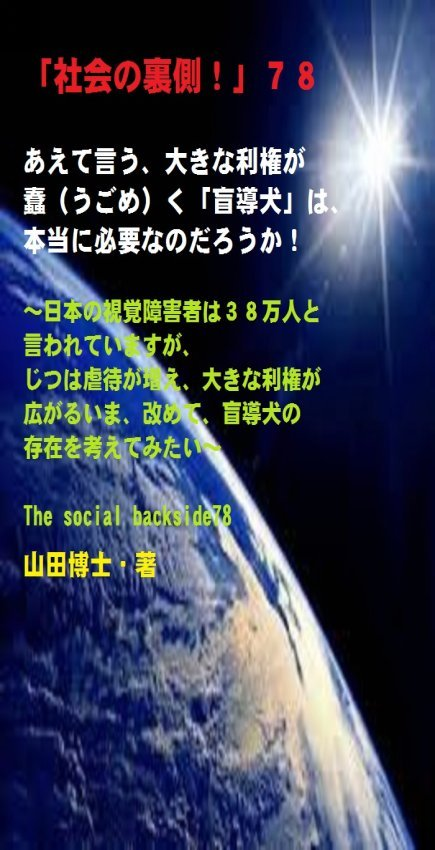

| 「社会の裏側！」７８......あえて言う、大きな利権が蠢（うごめ）く「盲導犬」は、本当に必要なのだろうか！: 日本の視覚障害者は３８万人と言われていますが、じつは虐待が増え、大きな利権が広がるいま、改めて、盲導犬の存在を考えてみたい | |
| 山田博士 | |
| kominitesyuppankai (2017) | |

■「社会の裏側！」７８
あえて言う、大きな利権が蠢（うごめ）く「盲導犬」は、本当に必要なのだろうか！
～日本の視覚障害者は３８万人と言われていますが、じつは虐待が増え、大きな利権が広がるいま、改めて、盲導犬の存在を考えてみたい～
The social backside78
山田博士・著
★本書の著作権について
皆さんにはまったく関係ないことだと思いますが、複写、転送、抜粋、転載など、著作権侵害にあたる行為は絶対になさらないで下さい。本書の著作権は、山田博士にあります。今後、皆さんのお役に立ちたい活動が出来なくなりますので、その点、ぜひよろしくお願いします。ささささ、それでは、本書をどうぞ、ごゆっくりご覧下さい。
★概要
その日（２０１５年１０月３日）。
徳島市の市道で、通勤中だったマッサージ師、山橋衛二さん（５０歳）が、ダンプカーにはねられて、胸などを強く打ち、間もなく死亡しました。
山橋さんは視覚障害者で、彼と一緒に歩いていた盲導犬のバルデス（雄、１０歳）も巻き込まれて死んだと言います。
なんとも惨（むご）い現実。
きっと、このバルデスは、山橋さんを放って逃げることはしなかったのでしょう。
普通のワン君なら、サッと逃げているはずです。
だけど、バルデスは、逃げなかった。
最期（さいご）まで、山橋さんのそばにいたわけですね。
きっと、そう教えられていたのでしょう。
だから、本当に不憫（ふびん）です。
日本で視覚障害を抱えている人は、全国で３８万人ほどいらっしゃるようですが、実際に盲導犬を希望している人は、そのうち推定で「７８００人」だと言われております。
もちろん、この数字は、この業界団体が叫んでいることですから、真実は分かりません。
なぜなら、予算を多く獲得するだけの数字かもしれませんしね。
本当は、それだけも必要がないのかもしれない。
まあ、いまは、そうだとして話を続けますが、その盲導犬の実働数はおよそ１０１０頭。
ところが、考えてみて下さい。
盲導犬を１頭育てるのに、２８００万円の予算が出ております。
信じられますか(笑)。
１頭につき、２８００万円ですぞ。
それらの予算や寄付金は、いったいどこへ消えたのか。
日本には９団体の盲導犬を育成する団体がありますが、本書では、厚労省が認可している「財団法人日本盲導犬協会」だけの話をしていますが、それでも、このような「黒い霧」がかかっております。
ぼくは、あえて言います。
いま、本当に盲導犬が必要なのかどうか。
利権でウハウハしている人たちを無くして、ワン君たちが人間とともにもっと自由に暮らせるようにできないものなのか。そして白杖だけで、視覚障害者のかたが安心して街に出られる社会を作りたい......。
そのような提案も込めて、本書を書きました。
盲導犬について、少しでもご関心のあるかた。
そして、ワン君など動物好きなかたに、ぜひお読みいただきたいなと思っております。
ささささ、それではどうぞ......。
★目次
★（第１章）
向こうから「盲導犬」が歩いてきたときは、ワン君好きのぼくでもけっして声もかけませんし、手も出しません。だって、彼（彼女）は、そのとき、自分のいのちを掛けて飼い主のために、一所懸命になって「仕事」をしている最中なのですから......
★（第２章）
あとで述べたいと思いますが、盲導犬の置かれた悲しい現状、盲導犬を育成している業界団体の黒い霧、視覚障害者たちの辛（つら）い現実、そして、歩行者（弱者）無視の道路行政......などなど......
★（第３章）
この「九州盲導犬協会」の仕打ちさえなければ......と、ぼくは本当に呆（あき）れております。ユーザーから酷（ひど）い虐待（ぎゃくたい）を受けた盲導犬アトムは、これに耐えかねて失踪（しっそう）してしまいました。そして現在もまだ見つかっておりません......
★（第４章）
あえて言います。いま、本当に盲導犬が必要なのかどうか。利権でウハウハしている人たちを無くして、ワン君たちが人間とともにもっと自由に暮らせるようにできないものなのか。そして白杖だけで、視覚障害者のかたが安心して街に出られる社会を作りたい......
★「社会の裏側！」シリーズの既刊本案内
★プロフィール
（最初に、恥ずかしながら、ぼくの紹介を簡単に述べておきます）
やまだ・ひろし。
１９４７年、福井県小浜（おばま）市生まれ。
食生態学者。元大学名誉教授。日本危機管理学会会員。
山田博士いのち研究所主宰。
ベトナム戦争の終わったちょうどその年１９７５年に、マンガストーリィと商品の実名で食べものや環境を取り上げた小冊子「暮しの赤信号」を発行する。実名で取り上げたため、社会に衝撃を与えた。各号１０万部単位で読まれ、隠れたベストセラーなどと、新聞などで何度も報道される。
同じ年、偶然にも有吉佐和子さんの「複合汚染」が発表され、この小冊子はその動きも受けて多くの学校の副読本としても活用された。
文化放送の「なっちゃこワイド」や、ＮＨＫ海外放送「ある日本人」でお話しをしたり、ギター弾き語り公演や、各自治体や学校などへの講演なども続けている。
現在は、メルマガ「暮しの赤信号」（「短縮版」と「完全版」の２種）を発行し、企業名や商品名なども公表して、世界中のかたに喜ばれている。
その読者層は、医師や看護師、栄養士、教師、会社経営者、自治体など、国の内外を問わず、多くの読者たちから毎日のように便りが届いている。年齢層も、１０代からかなりの高齢のかたまで、さまざまだ。
このメルマガは、まぐまぐ！を始め３つのスタンドの合計で、７千部発行しているが、もしご関心のあるかたは、ご覧いただくと嬉しい。毎日、早朝５時に届けられる（日曜は除く）。その時刻を楽しみにされている読者も多いとか。
先述したように、メルマガ「暮しの赤信号」には２種類あり、「短縮版」のほうは無料。「完全版」のほうは、山田の思いが１００％掲載されており、社会を見るのに、毎回大いに参考になるだろう。そのほかにもさまざまな特典がある。「短縮版」については、次のアドレスで登録できる（「完全版」は、「短縮版」の中に案内あり）。
■「短縮版」登録（無料）→ http://goo.gl/AFx95J
また、毎月第３土曜日に、東京の恵比寿でお茶飲み会「博々亭（ひろびろてい）」を開催。遠路から毎回読者が駆けつけている。参加条件はメルマガ読者に限定。参加費用は無料だ（８月と１２月はお休み）。
著書に 『脱コンビニ食！』（平凡社新書）
『危険な食品』（宝島社新書）
『その食品はホンモノですか？』（三才ブックス）
『ひとり月１万円食費で幸せ生活』（ＷＡＶＥ出版）
『最新 危ないコンビニ食』（現代書館）
『あぶないコンビニ食』（三一新書）
『続 あぶないコンビニ食』（同）
『外食店健康度ランキング』（同）
『山田博士の暮しの赤信号』第１巻～第５巻（亜紀書房）
『暮しの赤信号』小冊子＆ＣＤ－ＲＯＭ版全２３巻
『月１万少々の食費で、ザクザクと健康を稼ぐぼくの方法』
『いのち運転"即実践"マニュアル』各話
『社会の裏側！』各巻
（これは、アマゾン発行の電子書籍。ＰＤＦ版でも読める）
『セーラー服と警察犬』（小説）各巻
『実話・食卓の事件簿』各巻......などがある。
山田のホームページ http://yamadainochi.com/
★はじめに......
こんにちは。
山田博士（やまだ・ひろし）です。
本書をご覧いただき、嬉しく思っております。
この内容をご覧いただくことで、少しでもあなたが「社会の裏側！」の流れにお気づきになり、そしてたとえ１ミリでもいい、即、行動されることを願っております。
ただ読むだけでは、誰でもできます。
それでは、あなたの身の回りの状況は石のように動きません。
本書をご覧になって、これは......と思うことがあれば、即行動なさって下さい。
お願いします。
その小さな行動の積み重ねこそが、あなたの明日を、１２色のバラ色で輝かせることになると信じております。
なお、この「社会の裏側！」は、今後もシリーズとして発刊して行くつもりです。
もしご関心があれば、「社会の裏側！」という名前で、アマゾンで検索してお調べ下さい。
さまざまな問題の社会の裏側！を詳しく、しかも楽しく述べております。
ぼくの名前で検索されても、見つかるのではないかと思います。
もし、「ＰＤＦ版」でご希望の場合は、ぼくの事務局まで遠慮なくお問い合わせ下さい。事務局→ http://goo.gl/t12Yx
ささささ、能書きはそこまでにします。
どうぞ、笑顔で、頁をお繰（く）り下さい。
お楽しみに！
山田博士
★（第１章）
向こうから「盲導犬」が歩いてきたときは、ワン君好きのぼくでもけっして声もかけませんし、手も出しません。だって、彼（彼女）は、そのとき、自分のいのちを掛けて飼い主のために、一所懸命になって「仕事」をしている最中なのですから......
ぼくは、生きものが大好きです。
なにしろ、いのちがあり動くものであるなら、「妻以外」どんなものでもサッと手を差し出します(笑)。
いや、植物にでさえ、ぼくはいつも語りかけております。
だから、農園で育つ野菜たちも、それだけでスクスクと大きく育ってくれる......気がするんですね。
声をかけてやれなかった野菜は、下を向いてスネております。
ほ、本当ですって......。
だから、ぼくは、ワン君やニャンコ嬢たちだけじゃなく、いのちの存在自体が好きなんです。
もちろん、人間の子どもなど、とくに好きです。
あれだけ精巧に出来たオモチャなんて、世の中を見渡してもどこにありますか（失礼っ！）。
チラッと、ぼくのほうを見ながら、お下げにした両側の髪を左右に大きく揺らせて駆け抜けて行く女の子。
何かいたずらするものはないかなあと、周囲をキョロキョロしている男の子。
もう、みんな、ぼくのためにわざわざ人生という舞台に突然現れてきてくれたみたい。
こうした光景をいつも見ていると、ぼくは本当にいのちが愛（いお）おしくなるんですね。
だから、環境破壊や添加物、農薬、放射性物質、「環ホル」（環境ホルモン）、「遺組み」（遺伝子組み換え）、そして戦争などによって、こうした子どもや動物や植物たちのいのちが壊（こわ）されることについては、他人以上に敏感なんです。
いつもは、こんなに「温厚な紳士」であるぼくでも（誰のこと？）、彼らを壊す事態だけは、どうしても許せない。
だから向こうから、ワン君が飼い主を連れながら（？）歩いてくれると、必ず手を差し伸べます。
すると、向こうもかなり先からぼくのことに気がついてくれるから、なんとも不思議。
ワン君との間に、特別なテレパシーでもあるのでしょうか。
ただし、そのワン君が「盲導犬」だった場合は別。
けっして声もかけませんし、手も出しません。
だって、彼（彼女）は、そのとき、自分のいのちを掛けて飼い主のために、一所懸命になって「仕事」をしている最中なのですから。
だから、邪魔をしてはいけませぬ（ここは、自分に対して、とくに言っております）。
本当なら、肩を叩いて「よっ、お疲れっ！」なんてぼくは声を掛けたい。
でも、それができませんので、そこはグッとこらえて、横目で見ながら通り過ぎるのですが、その彼らがぼくの好きなラブラドール・レトリーバーやシェパードだと、とくに辛（つら）い。
茶毛をしたラブラドール・レトリーバーが、ぼくの実家で２０１４年まで住んでいました。
彼らのの多くは、家庭犬や盲導犬、それに警察犬などの使役（しえき）犬として飼われているのですが、とくにラブラドール・レトリーバーは、水かきのついた足を持っているんですね。
なぜなら、彼らは、もともとカナダで、魚網（ぎょもう）の牽引（けんいん）や網からこぼれ落ちたニシンやタラの回収といった作業で使われていたんです。
ただ、ぼくの実家で飼っていたワン君に限って言いますと、えっと......どうも、あまりおつむのほうが......えっと......(笑)。
まあでも、人間そっくりなワン君でしたね。
人間の心ばかり、考えている。
そうとしか思えないほど、人間以上のワン君でした。
その彼らがいま、とくに盲導犬として活躍しております。
現在、視覚障害を抱えている人は、全国で３８万人ほどいらっしゃるようですが、そのうち盲導犬を希望している人は、推定で「７８００人」だとか。
しかしこの数字も本当にそうなのか、あとで述べるような理由のため、分かりません。
悲しいことに、この業界の団体がそのような数字を叫べば、国庫からお金が出てくる仕掛けになっているわけですから。
つまり、こんなところにも、利権が絡（から）んでいるわけなんですね。
でも、いずれにしても、その盲導犬の実働数は、およそ１０１０頭ほど（２０１３年度現在）。
その盲導犬の１頭が......ある日、車に......殺されました。
しかも、いっしょに歩いていた視覚障害者とともに「二人」とも......。
こんな悲惨な「事件」がありますか。
つまり......。
★（第２章）
あとで述べたいと思いますが、盲導犬の置かれた悲しい現状、盲導犬を育成している業界団体の黒い霧、視覚障害者たちの辛（つら）い現実、そして、歩行者（弱者）無視の道路行政......などなど......
２０１５年１０月３日、午前８時（ごろ）。
徳島市の市道で、通勤中だったマッサージ師、山橋衛二さん（５０歳）が、ダンプカーにはねられて、胸などを強く打ち、間もなく死亡しました。
山橋さんは視覚障害者で、彼と一緒に歩いていた盲導犬のバルデス（雄、１０歳）も巻き込まれて死んだと言います。
なんとも惨（むご）い現実。
きっと、このバルデスは、山橋さんを放って逃げることはしなかったのでしょう。
普通のワン君なら、サッと逃げているはずです。
なぜなら、そのトラックは、砂利（じゃり）置き場からバックで市道へ出たところだったと言います。
つまり、スピードは出ていなかった。
だから、ワン君だけだったなら、サッと逃げることができたことでしょう。
だけど、バルデスは、逃げなかった。
最期（さいご）まで、山橋さんのそばにいたわけですね。
きっと、そう教えられていたのでしょう。
だから、本当に不憫（ふびん）です。
ワン君の気持ちが分かるぼくは（と信じている）、とくにそう思います。
バルデスは、そのとき何を思いながら......息絶えたのでしょう。
この事件の一報を聞いたとき、ふだん心配しているさまざまな事実が、ぼくの頭の中を縦横（じゅうおう）によぎりました。
あとで述べたいと思いますが、盲導犬の置かれた悲しい現状、盲導犬を育成している業界団体の●●、視覚障害者たちの辛（つら）い現実、そして、歩行者（弱者）無視の道路行政......などなど（●●は下記の設問を）。
本当に、何から述べていいのか分からなくなるほど、問題は山積しております。
だけど、多くの健常者たちは「気がつかない」だけ。
そうして、そういう日常の陰で、ワン君たちは虐（しいた）げられ、視覚障害者たちは苦しみ、その裏側で、誰かがほくそ笑（え）んでいる。
こうした事実を許せますか。
じつは過去に国会などで問題になってはいるわけなんですが、なぜかマスコミたちは、それを報道さえしない。
報道しても一過性に過ぎないわけですね。
これじゃ、国民的議論にまではなりません。
でも、今回のこの「小さな事件（本当は言いようのない大きな事件）」に、ぼくたち日本人全員の未来に関する「大きくて大切な事実」が隠されております。
それを、この際、ぜひ知ってほしいなと思います。
先述しましたが、日本で視覚障害を抱えている人は、全国で３８万人ほどいらっしゃるようですが、実際に盲導犬を希望している人は、そのうち推定で「７８００人」だと言われております。
この数字は、もちろんこの業界団体が叫んでいることですから、真実は分かりません。
本当は、それだけも必要がないのかもしれない。
まあ、いまは、そうだとして話を続けますが、その盲導犬の実働数はおよそ１０１０頭。
これじゃ、いつまで待っても、盲導犬はそばに来てくれない。
その教育や訓練にいかに費用がかかると言っても、少々おかしくはありませんか。
なぜ欧米では普及しているのです？
日本のほうが、かの国よりお金がないから？(笑)
盲導犬の普及率を見てみますと、人口１００万人あたりの盲導犬ユーザー数は、イギリスが７９．２人、アメリカ３５．５人、オーストラリア２６．０人、ドイツ２８．８人......そして......日本は、なんと７．９人！
う～むむむ。
う～むむむ。
う～むむむ（いつものように、うなります。笑）。
イギリスやオーストラリアなどよりは、日本という国にはお金があるようですが、なぜ？
この盲導犬の育成は、公益事業とされているんですね。
そのため、その育成団体には国や地方自治体が多額の助成金を支出しております。
そのほかにも「寄付」も集められていますしね。
ところが、日本では、それらのカネの行方（ゆくえ）がどうも不明なんです。
誰かの懐（ふところ）に入っているとしか思えない。
天下り役人でなければ、いいのですが......。
少々以前のことになりますが、国会で、この盲導犬について論議されたことがありました（２０００年）。
そのとき、ある議員が補助金などについて政府委員に問いただしています。
下記は概略です。文言は分かりやすいように、少し変えました。議事録ですから、少々、それでも文面も分かりにくく、固い文章になっておりますが、ご辛抱下さい。
いやいや、政府参考人の言葉が面白い(笑)。
ここから↓
●（議員）
「その補助金等を、委託金を受けて盲導犬そして介助犬を育成する団体について伺いますが、本法案では、介助犬育成団体の認可については会計報告の義務がないということで、基準が非常に緩（ゆる）いものになっているということですね」
「まず、政府参考人に伺いたいんですけれども、盲導犬育成団体、９団体ございますが、そのうち唯一、厚生労働省が認可している財団法人日本盲導犬協会につきまして、昨年度の予算額は幾らでしたでしょうか」
●（政府参考人）
「平成１２年度（２０００年）におきまして、新しい施設を建設するための特別会計等を除いた一般会計の支出額は約４億８千万円でございます。
４億８千万円のうち、広報啓発に係る費用等を除いた一般の事業費及び管理費は、約３億２千万円でございます」
●（議員）
「しかし、その３億の寄附金を受け、また２億近い助成金等を受けて運営される日本盲導犬協会がその予算額で育成した盲導犬の数は何頭でしょうか」
●政府参考人
「一年間の１２年度におきます育成頭数は１７頭でございます」
●（議員）
「そうしますと、非常に乱暴な計算なんですけれども、一頭当たり幾ら掛かったことになりますでしょうか」
●政府参考人
「全体の予算額で割りますと、一頭当たり２８００万円。それから、一般事業費及び管理費のみで一頭当たりの支出額を見ますと、約１９００万円ということになります」
●（議員）
「私は、日本盲導犬協会が単に盲導犬を育成しているだけではなくて、非常に広報活動等に力を入れているということは十分存じ上げているつもりですけれども、ただ、このドンブリ勘定というものはしばしば問題の核心をついていることがございます。
５億の予算でわずか、先ほど１７頭とおっしゃいました。
５億の予算額でわずか１７頭しか育成できない。
これは常識的に考えて経費が掛かり過ぎるのではないかと思います」
ここまで↑
......もう、お分かりですね(笑)。
なんとも......というやりとりですよね。
政府は予算さえ付ければ、あとは知らん顔......というわけです。
考えてみて下さい。
盲導犬を１頭育てるのに、２８００万円。
信じられますか(笑)。
それらの予算や寄付金は、いったいどこへ消えたのか。
もちろん、さまざまな費用がかかることは分かります。
どうしても必要な費用には、思いっきりおカネをかけてほしい。
でも、不透明な部分があれば、それらを総ざらいして国民の前に出してほしいんですね。
違いますか。
そうでなければ、盲導犬も視覚障害者も、みんな苦しんでしまうことになります。
日本には９団体の盲導犬を育成する団体がありますが、上記は、厚労省が認可している「財団法人日本盲導犬協会」だけの話です。
そのほかに全国に存在している団体への助成金や寄付金の額は、いったいいくらになるものでしょうか。
ぼくたちの貴重な税金や寄付金が、使途不明であるなんて、驚きじゃありませんか。
こうした財団へ、まさか役人たちは天下りなどはけっしてしてはいないでしょうなあ(笑)。
もう一つ言えば、こうした盲導犬の訓練を受ける前の子犬は、ボランティアに任せているわけですね。
つまり、「パピーウォーカー」に任せているわけです。
この「パピーウォーカー」とは、つまり子犬飼育ボランティアのこと。
つまり、生後約５０日程度から約１年間ほど、盲導犬候補の子犬の飼育を、ボランティアの自宅で任せるというもの。
だから、この段階では、「盲導犬協会」からはお金がほとんど出ていきません。不要です。
つまり、儲かる......。
人の善意につけ込んで（？）、まあ、うまく考えたものですなあ(笑)。
しかも、こうしてせっかくユーザーに渡された盲導犬たちも、みんながみんな幸せでもないんですね。
なぜなら、あまりにもの虐待に耐えかねて、なんと「盲導犬が失踪（しっそう）した事件」が......九州で、ありました。
それは、こういうことです......。
★（第３章）
この「九州盲導犬協会」の仕打ちさえなければ......と、ぼくは本当に呆（あき）れております。ユーザーから酷（ひど）い虐待（ぎゃくたい）を受けた盲導犬アトムは、これに耐えかねて失踪（しっそう）してしまいました。そして現在もまだ見つかっておりません......
その盲導犬の名前は、アトム。
まだ若い３歳のオスです。
ユーザーの元へやってきたときは、きっと鉄腕アトムのようなワン君......だったのでしょう。
気は優しくて力持ち。
まるで、ぼくみたいです......（冗談ですって）。
このアトム、２００９年１１月に、「九州盲導犬協会」からユーザーへ貸与（たいよ）されました（貸与なんて、モノ扱いのようで嫌な言葉ですが、そう表現されていますので、いまだけ使います）。
厳（きび）しい訓練を経てテストにも合格した盲導犬ですが、せっかく社会に力いっぱい貢献しようと思いながらユーザーの元へ来たのですが、そこで待っていたものは......。
凄（すさ）まじい虐待だったわけです。
２００９年の１２月に、住民からの初めての通報があったようですが、２０１０年の５月にやはり住民からの通報により、アトムはいったん「九州盲導犬協会」に戻ります。
そう、出戻りしました。
だけど、この「九州盲導犬協会」は、同年の８月、なんと同じユーザーの元へ、また再貸与してしまうのです。
同じユーザーのところへ、です。
この協会、よく、平気でこのような行為ができますよね。
言葉もしゃべれないアトムを、再度、いままで虐待を受けた同じ人物が住む密室の中に放り込んでしまったわけです。
そして、またまた酷（ひど）い虐待を受け続けたアトムは、２０１２年１月、ついに失踪（しっそう）してしまいます。
耐えるに耐えないほどのことだったのでしょう。
あの柔和（にゅうわ）なラブラドール・レトリーバーのアトムが失踪する......。
確かに、視覚障害者だって、みんながみんな善人だとは言えません。
それは健常者だってそうです。
それは認めます。
だけど、今回のこの視覚障害者は、少々、異様です。
その視覚障害者の男性が、まだ若いアトムのハーネス（白い胴輪のこと）を引っ張りながら先導して歩く姿を、多くの人が目撃しているんですね。
目の不自由な男性が、盲導犬のハーネスを引っ張りながら歩く！
そんなことって、ありますか。
そのときはすでに、アトムは心も体も病（や）んでいたのでしょう。歩くこともままならなかった......。
そして、アトムに与えられた食事は、もの凄く少量でした。
「食事や水をいっぱいやれば、糞（ふん）や小便ばするけん。少しやればよかと」
......と言いながら、毎日わずかな量しかもらえなかったんですね。
そしてアトムの体は、徐々に衰弱を極めて......衰（おとろ）えて行ったと言います（出所：このあたりは、このアトムの行く末に心を止めたあるかたがブログで書かれていたものを参考にしました）。
しかも、「盲導犬は、糞や小便などは何時間でも我慢できる」という考えからか、その男性は、排泄（はいせつ）の時間も設けなかったんですね。
我慢の限界を超えたアトムは、歩きながら小便を垂（た）れ流して歩いていたと......。
その光景は、何度も、多くの人に目撃されているわけですね。
そして人々は、警察や県庁にも報告しています。
そして、アトムは失踪した。
現在、まだ見つかっておりません。
その後、彼はどうしたのか。
どうなったのか。
誰にも分からないわけです......。
長崎県付近にお住まいのかたは、ぜひ気に掛けて下さい。
お願いします。
こうした現実を、ぜひ頭に入れておいて下さい。
もちろん、ユーザーたちは心温まるかたばかりだと思います。
ぼくも、かつてそういうかたと接したことがありますから、それはよく分かります。
でも、相手は生きものなんですね。
ユーザーたちの善意ばかりに頼るわけにはいかないのも現実です。
そこで、ぼくは盲導犬については下記のように考えておりますので、ちょっとお聞き下さい。
もちろん、今後、環境などが変化すれば、ぼくの思いも変わるかもしれません。
でもいまの業界の状況なども鑑（かんが）み、あるいは、いままで盲導犬たちと少しだけ付き合ってきた体験で、いま考えていることを、少しお話ししておきたいなと思っています。
お忙しいでしょうが、ちょこっとだけ、聞いてやって下さいな(笑)。
それは......。
★（第４章）
あえて言います。いま、本当に盲導犬が必要なのかどうか。利権でウハウハしている人たちを無くして、ワン君たちが人間とともにもっと自由に暮らせるようにできないものなのか。そして白杖だけで、視覚障害者のかたが安心して街に出られる社会を作りたい......
ここまでは、盲導犬が日本には少ないこと。
そして、盲導犬協会などの業界の利権などについて、述べてきました。
しかし、本当に、盲導犬が必要なのだろうか。
ぼくは、ここでふと立ち止まって、考えるのです。
確かに目の不自由なかたの気持ちは分かります。
ぼくなどのような健常者が想像する以上の不便を強（し）いられていらっしゃるのも、分かるような気はします。
ただ、ぼくは盲導犬も人間と同様の生きものだと思う。
同じ仲間だと思うわけですね。
この地球という一つの狭い星にたまたま住み、とくにこのワン君と人間がいっしょに暮らすようになったのは、いまから１万年前とも１万５千年前とも言わるような、大昔からなんですね。
旧石器時代や縄文時代に値するような時代。
もう、気が遠くなるほどの昔昔のころから、いっしょに暮らしてきたわけですね。
互いが相手を思い、同じ天敵と闘い、そして慰めあってきたわけです。まさに仲間。
だけど、この盲導犬。
彼らは、もう言葉では言い表せないような、もの凄（すご）い過酷な人生（犬生）を送っています。
なにしろ、ユーザーによっては散歩はまったくさせないとか、オシッコでマーキングをすることや走るのさえ禁止され、ほかの人や仲間のワン君たちと接することもできない。
まったく「ひとりぼっち」なんですね。
そして、１０年～１２年という短い一生なのに、飼い主が「５回」も変わる。
そんな現実を、ご存じでしたか。
つまり、最初の繁殖時期、先述した「パピーウォーカー」時期、協会での訓練時期、そのあとのユーザーといっしょの時期、そして引退時期。
なんとも、めまぐるしいものでしょ。
そして、とくに盲導犬といっしょに暮らすユーザーには、年配者や無職のかたが多いんです。
なぜなら、ユーザーになるには、盲導犬といっしょに１カ月ほど暮らさなくてはならない。
若い人や年配者でも仕事に就（つ）いている人に、そんなことできますか。
とても、そんな時間がとれません。
そのため、同じ高齢者のところばかりに、盲導犬が派遣されることになる。
これでは、社会に浸透しないのも無理がないのじゃありませんか。
そして、先述したように、利権の問題があります。
これも先述しましたが、現在、盲導犬団体は全国に９団体あります。
どの団体も公益法人や社会福祉法人認定を受けており、そのため、公金から育成費や補助金を得たりしていますが、そのほかにも寄付などによって、膨大な収入があるわけですね。
ある大きな組織では、年度総収入を盲導犬育成数で割ると、１頭当たり、なんと４０００万円以上になっていると言います。
これだけの巨費は、いったいどこへ消えているのでしょうか。
なんとも不思議だと思いませんか。
そう思いませんか。
それらのおカネは、本当に盲導犬を普及させることに使われているのかどうか。
そして、先述したように訓練をしてから盲導犬になるわけですが、それでも実際に盲導犬になれるのは３割なんですね。
それなのに、盲導犬になれなかったワン君たちの行方（ゆくえ）が分からない。
ひょっとして高価に販売されているのかもしれませんよね。
すると、そのお金はいったいどこへ......。
しかも、盲導犬１頭につき、地方自治体から盲導犬の団体に、盲導犬育成費として約２００万円が支払われています。
もちろん、それはぼくたちの税金ですが、その後に、その盲導犬がどうなろうと、まったく査察もない。
行政は、お金を出せば、おしまいなんですね。
先ほど述べたようなアトムが失踪しても、そんなこと、彼らにはまったく関心も何もないわけです。
自分たちの懐（ふところ）が痛むこともない。
もちろん、心も痛んでいないことでしょう。
そして、先述しましたように、よく宣伝などで「数千人が盲導犬を待っています」という言葉を聞いたりますが、本当なのでしょうか。
なぜなら、最大手の団体であっても、盲導犬になるのは１年間に５０頭以下ぐらいなんですが、ユーザーになる人が盲導犬を申請すれば、「ほぼ年度内には支給」されております。
しかも２回目以降ともなれば、初回の人より優先されています。
だから、先ほど述べましたように、同じ人ばかりがこの盲導犬を活用しているわけですね。
じつは、本当のことを言いましょう。
業界団体が宣伝するのとは裏腹に、実際問題として、こうした盲導犬を希望する人はじつに少ないんです。
団体が盛んにキャンペーンをしていますが、じつのところは、そういうことなんですね。
だから、盲導犬を必要としない人にまで盲導犬が支給されたりするため、先述のアトムの場合のような虐待などが起こるのではないでしょうか。
考えてもみて下さい。
ラブラドール・レトリーバーは大型犬です。
体重は３０キロ前後になる大型犬ですから、健常者でも世話は大変ですし、エサ代も、医療費もかさみます。
家の中では毛も抜けますし、下（しも）の世話も大変。
なにしろ、生きものですからね。
白杖（はくじょう。白いツエのこと）とは違います。
そんな盲導犬を、視覚障害だからと言って、すぐに必要としますか。
ぼくは、それより、もっともっと街を視覚障害者のためにこそ、改革するべきだと思っています。
そして、白杖の意味を、子どもたちに学校などでいつも教え、誰でもそれを見ればすぐに対応できる雰囲気を作る。
その上で、道路対策や交通対策に本当の技術を使ってほしい。
企業など、そうした方向になぜもっと力を入れないのか。
健常者にも同時に役立つインフラであれば、きっと需要も多いと思うのですがね。
そして、道路を、クルマから歩行者に......奪還（だっかん）したい。
現在は、誰が何と言おうと、道はクルマ優先です。
なにしろ、歩道はガタガタ、いつも斜めになっていて、狭い。
車道のほうが、よほど歩きやすいんですね。
これじゃまったく逆じゃないですか。
車道など穴が空いていてもいいんです(まあ、ちと大げさ。笑)。
しかし、歩道は車イスやベビーカー、白杖を持っている人などが通るには、あまりにも障害物が多すぎます。
ぼくはいつも４輪のキャスターを押して歩いていますが、歩道の道の悪さには、いつも音（ね）を上げております。
傾斜していたり、電信柱が突っ立っていたり、狭かったり、段差が多かったり、雨水がたまっていたり、これでは、車イスやベビーカーは、どこをどう歩けばいいのですか。
そのようなインフラをもっともっと歩行者優先に変えること。
こうしたことが進めば、盲導犬よりもっと気楽な、楽しい社会が生まれるのじゃありませんか。
冒頭の「交通事件」で亡くなられかたも、「車道と歩道の区別が分かりにくくて危ない......」と、いつもおっしゃっていたそうです。
そう言えば、あのアトム。
どこへ失踪してしまったのか。
無事にどこかに潜（もぐ）り込んで生きていてくれるといいのですが。
えっと......どこかに......鉄腕アトムでもいて、その鉄腕で悪いヤツをエイッとばかりにやっつけて、その延長で、同じ名前のアトムを捜（さが）してくれないものかしらん。
お～い、鉄腕アトムさんよお（なんて、空に向かって叫んでおりますが、はて）......。
ハハハ......。それじゃまた次回ね。ご機嫌よう。（山田博士）
▼設問です▼
設問→ 上記の文章を読み、下記の●●にあてはまるものを、選択語句から選んでみよ。ただし２文字とは限らない。
「あとで述べたいと思いますが、盲導犬の置かれた悲しい現状、盲導犬を育成している業界団体の●●、視覚障害者たちの辛（つら）い現実、そして、歩行者（弱者）無視の道路行政......などなど」
【選択語句→ 黒い瞳、黒い霧、白い霧】
■答え■
下記のとおりです。でも、先に答えを見てはいけません。
本文を再度ご覧になり、十分想像してから答えをご覧下さい。
きっとその繰り返しが、あなたの明日を輝かせることになると思っています。
答え→ 黒い霧
（了）
★（最後にひとこと）
ここまでお読みになって下さり、ありがとうございました。
ここで述べているような内容の最新情報を、メルマガ「暮しの赤信号」では述べております。
企業名や商品名も公表していますので、もしご関心のあるかたは、下記から登録されれば、毎回、自動的にお送りします。
「短縮版」は無料です。
毎回、早朝５時に、あなたのところへ配信します。
現在、全世界で数千部を配信しておりますが、楽しい文体が人気のようですよ。早朝５時をお待ちになっているかたも......。
その日から役立つ内容です。
「短縮版」（無料です）→ http://goo.gl/AFx95J
メルマガ上で、また、お逢いしましょう！
＝＝＝＝＝＝＝＝＝＝＝＝＝＝＝＝＝＝＝＝＝＝＝＝＝＝＝＝＝＝
★「社会の裏側！」シリーズの既刊本案内★
（山田博士・著）
「電子版」と「ＰＤＦ版」があります。お好みのほうで、どうぞ。
～これだけたくさん、マスコミも言わない内容が、存在します！
ご関心のあるものから、ご覧ください～
＝＝＝＝＝＝＝＝＝＝＝＝＝＝＝＝＝＝＝＝＝＝＝＝＝＝＝＝＝＝＝
★「電子版」は、レートにもよりますが、５８５円前後。
★「ＰＤＦ版」は、下記のフォームでご連絡ください。
→ https://goo.gl/GPFu2B
（１冊は１０００円ですが、数が多くなればかなり
の割引をしています。最安で４００円です）
★
★
★
【１】社会の裏側！ １......子宮頸ガンワクチンで女子中高生が泣いている！
→ https://goo.gl/BMwQTm
【２】社会の裏側！ ２......ペットボトルを「ペット」にしてはいけない。新生児の男女比が驚くことになっている！
→ https://goo.gl/QuFsYz
【３】社会の裏側！ ３......牛丼店「すき家」が、従業員を貧困のどん底に！
→ https://goo.gl/YrmzNf
【４】社会の裏側！ ４......小学校の低学年児に「向精神薬」を処方する医師たち！
→ https://goo.gl/L97NJu
【５】社会の裏側！ ５......映画「世界が食べられなくなる日」。原子力、「遺組み」の現実！
→ https://goo.gl/7HwZ38
【６】社会の裏側！ ６......蚊帳（かや）に練り込まれた「毒物」ってご存じでした？
→ https://goo.gl/dMa52s
【７】社会の裏側！ ７......あなたは、放射性物質が濃縮された「エコセメント」で住宅を建てますか？
→ https://goo.gl/UbkdH4
【８】社会の裏側！ ８......いまや加工食品の甘味のほとんどは「異性化糖」だ！遺伝子組み換えコーンによるこの甘味料が日本人を壊す
→ https://goo.gl/6FNSeG
【９】社会の裏側！ ９......ＬＥＤ照明の「人体実験国」ニッポン！
→ https://goo.gl/VQWQam
【１０】社会の裏側！ １０......コーラの着色料に「発ガン性」の疑惑が出た！
→ https://goo.gl/XvNdfn
【１１】社会の裏側！ １１......「香料」のせいで死ぬ思いの人たちへ！日本人の母乳や脂肪から初めて検出された「人工のムスク」
→ https://goo.gl/UcZRzf
【１２】社会の裏側！ １２......子どもの「健康格差」が凄まじい！なんと「就学援助」の小中学生が１４２万人になった
→ https://goo.gl/nGhdnC
【１３】社会の裏側！ １３......ＴＰＰと私設法廷。じつはこの「ＩＳＤ条項」こそが日本乗っ取りの要だった！
→ https://goo.gl/QyH2ot
【１４】社会の裏側！ １４......築地市場移転の本当の狙い！この裏に、電通と日本ＴＶ、そしてＧＳ社が蠢いていた！
→ https://goo.gl/BerZHM
【１５】社会の裏側！ １５......ミツバチたちが消えたら、人間は「４年も」生きられない！
→ https://goo.gl/dRuppK
【１６】社会の裏側！ １６......偽装食品がなぜ広がるのか！阪急阪神ホテルズのニセ食材事件なんて、氷山の一角に過ぎない
→ https://goo.gl/S4k2Yu
【１７】社会の裏側！ １７......過去最大の「米偽装事件」。それは米離れの若者が原因だった！
→ https://goo.gl/Px911Z
【１８】社会の裏側！ １８......総合ビタミン剤などのサプリメントは、ガンや心疾患のリスクを高める！
→ https://goo.gl/28qECA
【１９】社会の裏側！ １９......海に漂うプラスチック破片には、人類が過去生産してきた多くの有害化学物質、とくに「ＰＯＰｓ」が含まれていた！
→ https://goo.gl/gQTmb5
【２０】社会の裏側！ ２０......高血圧症患者が、「人為的に量産」されている！
→ https://goo.gl/BjxoYz
【２１】社会の裏側！ ２１......子どもの貧困は、「日本の未来」を左右する！
→ https://goo.gl/6g38Wq
【２２】社会の裏側！ ２２......サプリメントのほとんどが、中国産になっていた！
→ https://goo.gl/zbJ4RP
【２３】社会の裏側！ ２３......食品の「製造所固有記号」の秘密。あなたにこの記号が読めるか！
→ https://goo.gl/DdohXk
【２４】社会の裏側！ ２４......ドライバーの「生活習慣病」と人身事故との関係！
→ https://goo.gl/iSPk3i
【２５】社会の裏側！ ２５......武田薬品工業のニセ高血圧治療薬「ブロプレス」問題は、何を物語っているのか。その衝撃的背景！
→ https://goo.gl/RdVsmj
【２６】社会の裏側！ ２６......砂糖は「炭酸飲料１缶でアウト」というＷＨＯ指針の理由とは！
→ https://goo.gl/x62eDU
【２７】社会の裏側！ ２７......なんと「発達障害児」の急増に、「農薬」が関係していた！
→ https://goo.gl/HKdw63
【２８】社会の裏側！ ２８......田中正造「真の文明は、山を荒らさず、川を荒らさず、村を破らず、人を殺さざるべし！」
→ https://goo.gl/enMLkE
【２９】社会の裏側！ ２９......治験。ネットの求人欄で、「とくに日本人」を募集するアメリカでの実態！
→ https://goo.gl/nmWfhA
【３０】社会の裏側！ ３０......「味噌」が、放射性物質を除去するこの実験。世界の人に知らせたい！
→ https://goo.gl/BMFNnc
【３１】社会の裏側！ ３１......「夢のリニア新幹線計画」が、日本人を壊（こわ）す４大理由！
→ https://goo.gl/Le9iR1
【３２】社会の裏側！ ３２......「食べもの戦争」は、異常気候の変動でこう勃発する！
→ https://goo.gl/A1VY4S
【３３】社会の裏側！ ３３......「ＳＴＡＰ細胞」大騒動と、理研コンツェルンのねらいとは！
→ https://goo.gl/qP9A9K
【３４】社会の裏側！ ３４......遺伝子組み換えの「不妊サケ」が、食卓に並ぶ日が来た！
→ https://goo.gl/f8Ddif
【３５】社会の裏側！ ３５......カネボウ美白化粧品や、ＤＨＣ社「ディープクレンジングオイル」にみる「医薬部外品」の陰謀とは！
→ https://goo.gl/cQ1qvE
【３６】社会の裏側！ ３６......食べものに「放射線」を照射すると、その食品自体から放射線が出る危険性が分かった！
→ https://goo.gl/BlmXwd
【３７】社会の裏側！ ３７......原発汚染時代の、ニッポンの「魚」の食べかた！
→ https://goo.gl/mQN0pK
【３８】社会の裏側！ ３８......じつは「家族農業」が、日本の飢餓リスクを救う！
→ https://goo.gl/O1eS2i
【３９】社会の裏側！ ３９......遺伝子組み換え「ご飯」が、もうまもなくあなたの食卓に！
→ https://goo.gl/xxHcQy
【４０】社会の裏側！ ４０......「女性の目線」に立った原発レポート！
→ https://goo.gl/UbsWYt
【４１】社会の裏側！ ４１......糖尿病予備軍の人が、「熱中症」で亡くなるこの衝撃理由！
→ https://goo.gl/JwcNQD
【４２】社会の裏側！ ４２......子どもの好きな食品に、これだけも遺伝子組み換え作物が使われていた。実名リスト付き！
→ https://goo.gl/9wtRGi
【４３】社会の裏側！ ４３......自閉症などの発達障害は、遺伝じゃなく、農薬などの「環ホル」が原因であることが分かった！
→ https://goo.gl/jdhiEo
【４４】「社会の裏側！」４４......ファッション企業の「ファーフリー」（毛皮は扱わない）の動きが広まったが、中国ではアンゴラウサギたちが今日も生きたまま！
→ https://goo.gl/KFW6Zg
【４５】「社会の裏側！」４５......広く使われている「人工甘味料」が、実際には、糖尿病のリスクを逆に高めていた。その衝撃的な事 実とは！
→ https://goo.gl/xnC1Xn
【４６】「社会の裏側！」４６......ミツバチが消えた。じつは、あなたがシックハウスや居間の殺虫剤で倒れる原因も、これと同じだった！
→ https://goo.gl/aUskUS
【４７】「社会の裏側！」４７......愛するペットに「ペットフード」を与えてはいけない！
→ https://goo.gl/Hm9mfR
【４８】「社会の裏側！」４８......学校給食の栄養士が「本当は」使いたくない中国食材とは！
→ https://goo.gl/mhveE8
【４９】「社会の裏側！」４９......なぜ、「栄養ドリンク剤」を未成年に禁止している国があるのか！
→ https://goo.gl/thazbz
【５０】「社会の裏側！」５０......あなた、「老人難民」になりますか。それとも死にますか？
→ https://goo.gl/QfxAyo
【５１】「社会の裏側！」５１......甘味料「Ｓｐｌｅｎｄａ」でダイエット中のかた、ご愁傷さまです！
→ https://goo.gl/a1tdan
【５２】「社会の裏側！」５２......バター不足は、「農畜産業振興機構」という天下り団体の自作自演だった！
→ https://goo.gl/sguZcw
【５３】「社会の裏側！」５３......青色「ＬＥＤ」のために、世界から日本が糾弾される日！
→ https://goo.gl/RCtxDW
【５４】「社会の裏側！」５４......キレる子どもと切っても切れない食生活！
→ https://goo.gl/L8KVJk
【５５】「社会の裏側！」５５......正月の「しめ縄」から、放射性物質のセシウムが年ごとに増えている現実をどう見るか！
→ https://goo.gl/eQJXm6
【５６】「社会の裏側！」５６......「プチ脳梗塞」が３０代から始まっている。人生を途中下車しないための簡単な方法はこれだ！
→ https://goo.gl/NRpcjg
【５７】「社会の裏側！」５７......男女両方の「不妊症状」が普遍的になった背景は、これだ！
→ https://goo.gl/IR0PZR
■「社会の裏側！」５８......スマホやケータイの「人質」になってはいけない！
→ https://goo.gl/ZhR7Qp
■「社会の裏側！」５９......「コーヒーフレッシュ」に見る、日本のコピー食品事情！
→ https://goo.gl/f2LyhG
■「社会の裏側！」６０......「フクシマ３．１１」のその後！～あの日からすぐに、農産物や人体の放射性物質を測定し続けた県民たちがいた。 同じ家族でも夫のほうが数値が高いわけとは～
→ https://goo.gl/GiQyQF
■「社会の裏側！」６１......タクシー大手の「日本交通」よ、消臭剤添加の「ファブタク」なんて愚かな行為は、即お止めなさい！
→ https://goo.gl/BCFvbR
■「社会の裏側！」６２......「ペットボトル茶」を、本当のお茶だと信じて飲んでいる悲しい日本人！
→ https://goo.gl/foVzzs
■「社会の裏側！」６３......抗菌石鹸は使ってはいけない！それは当然だけど、今回の事件をきっかけに、「抗菌生活」の是非を考えようよ
→ https://goo.gl/i1NWhQ
■「社会の裏側！」６４......コンビニの「おにぎり」が腐敗しないわけ。ＰＨ調整剤の正体とは！
→ https://goo.gl/3BYY9b
■「社会の裏側！」６５......市販薬の「副作用」を、甘く見てはいけない！
→ https://goo.gl/UNsNVM
■「社会の裏側！」６６......「モンサント社」という企業を、少し考えてみようと思います！
→ https://goo.gl/XQVGtY
■「社会の裏側！」６７......次世代電力計「スマートメーター」の電磁波が、なぜこれだけも重大な影響を与えるのだろう。その具体的な数値をお伝えしよう！
→ https://goo.gl/ev8cjr
■「社会の裏側！」６８......大企業が税金を払わなくて済む凄いカラクリ。しかも消費税が、「法人税減収」を補填していた！
→ https://goo.gl/VfHVTT
■「社会の裏側！」６９......「エナジードリンク」が、なぜ死亡事故を招きやすいのか！
→ https://goo.gl/DtGmbS
■「社会の裏側！」７０......企業の「遺伝子検査」は、絶対に受けてはいけない！
→ https://goo.gl/jJ8NMm
■「社会の裏側！」７１......マーガリンが、あなたの体を溶かしている！
→ https://goo.gl/xTSx6r
■「社会の裏側！」７２......女性たちよ。マニキュアの３大化学物質に注意しなさい。ネイルサロンの美容部員たちが倒れる理由はこれだった！
→ https://goo.gl/aPRxFG
■「社会の裏側！」７３......自殺者多発の東尋坊で、数年間に５００人を救った「ちょっと待ておじさん」から学ぶ、日本人に大切なこととは！
→ https://goo.gl/Qaqyna
■「社会の裏側！」７４......夏！ 虫よけ対策、あなたならどうする？「ピレスロイド系」などにより、年間３００件の重大事故が多発中！
→ https://goo.gl/Wfggyf
■「社会の裏側！」７５......抗生物質が効かない！
→ https://goo.gl/nqYgjS
■「社会の裏側！」７６......ワン君やニャンコ嬢たちを殺してはいけない！動物を大切にしない国は、人間をも大切にしていないのです。彼らを救う３つの提案！
→ https://goo.gl/QhgCew
■「社会の裏側！」７７......漁師や魚たちの涙が、君に見えるか！
→ https://goo.gl/L7GEPt
★もし、上記でご関心のある作品があれば、ぜひどうぞ！
「ＰＤＦ版」は、下記のフォームでご連絡ください。
→ https://goo.gl/GPFu2B
★奥付
■「社会の裏側！」７８
あえて言う、大きな利権が蠢（うごめ）く「盲導犬」は、本当に必要なのだろうか！
～日本の視覚障害者は３８万人と言われていますが、じつは虐待が増え、大きな利権が広がるいま、改めて、盲導犬の存在を考えてみたい～
The social backside78
山田博士・著
第１刷発行日：2017/09/25
－－－－－－－－－－－－－－－－－－－－－－－－－－－－－－
著／山田博士
発行／山田博士いのち研究所
105-000 1 東京都港区虎ノ門２－２－５共同通信会館Ｂ１Ｆ
http://yamadainochi.com/
事務局→ http://goo.gl/t12Yx
－－－－－－－－－－－－－－－－－－－－－－－－－－－－－－